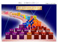

カッコイイ５０＋を歩く
発行 愛育社 著者 須藤英彦
健康は歯から ５０歳過ぎたら「かかりつけ歯科医」を持とう
じつは僕の歯（著者）は大人になってから、一度も虫歯になったことがありません。
つまり、永久歯に変わってからというもの、虫歯の治療をしたことがなかったのです。
そこで、安心してしまったのでしょう。
何時頃からか、歯磨きをちゃんとしなくなってしまったのです。
そして５０歳を過ぎた頃、家内から「ちゃんと歯磨きしている？口臭があるよ。
歯周病かもしれないから、歯医者さんに見てもらったら？」と言われたのです。
早速、歯医者に行ってみると、「このまま放っておくとまずい、歯周病になりますよ。
しっかり歯を磨いて下さい。」と言われてしまいました。
これを聞いた時、初めは、とてもショックでしたが、まともに歯を磨いていなかったのは事実でしたし
歯を磨くと血が出ることもありましたので、早速、治療を始めることにしたのです。
これからインタビューさせていただく、津江先生は、「歯を守る最高の名医」（月間現代、２００８年）
にも選ばれています。
先生には歯周病の治療だけではなく、睡眠時無呼吸症候群のマウスピースも作っていただきました。
津江先生は僕の「かかりつけ歯科医」です。
メタボリックドミノ
まずは、先生に単純な質問です。どうしてむし歯になりやすい人とそうでない人がいるのでしょうか？津 江
一言で言えば、むし歯になにくい人の唾液と歯周病になりにくい人の唾液とは、性質が違うということなんです。
むし歯になりにくい人は酸を中和させる能力が高い唾液を持っているのです。
他にもむし歯には口腔内細菌の量、種類、食事の内容、摂り方、歯の強さ、時間などが影響すると言われています。
なるほど、それでは僕の場合は、酸を中和させる能力が高い唾液のおかげで、むし歯にはならなかったけれど、 歯周病になっちゃた訳ですね。
それでは、メタリックシンドロームはお馴染みになりましたが、メタボリックドミノというのは 、どんな考え方なんでしょうか。
図２

津 江
歯及び口腔内の健康と全身の健康は密接に繋がっています。
歯周病の原因となる細菌は酸素が嫌いで毒素を作り炎症を起こす性質があります。
そのために歯周病になると細菌と毒素の影響で動脈硬化、心筋梗塞、脳梗塞、誤嚥性の肺炎、
女性であれば早産のリスクが高まります。
糖尿病になると歯周病が悪化する。
ということが最近になって分かって来ました。
内科と歯科の医療連携がここ１～２年広まっています。
当院にも糖尿病専門医からの情報提供による紹介患者が増えています。
図２（「メタボリックドミノとはー生活習慣病の新しいとらえ方」より引用）
を見ていただくとわかると思うのですが、生活習慣病をドミノ倒しに例えると、上流にある歯周病のドミノを倒れないようにしっかり予防すれば
、下流の糖尿病、心筋梗塞、動脈硬化などのドミノが倒れるのを
防げる＝予防する事ができる訳です。
つまり、ドミノの源流で、その流れを止めることが重要なのです。
それにより日本人の健康寿命を延ばし、国の医療費を削減できるのです。
このことを是非みなさんに知って欲しいです。
５０＋に向けて、特に気をつけて欲しいメッセージは？
津 江
男性は仕事等で忙しく、４０代・５０代の方の受診が少ないことが気になります。
５０歳過ぎたら、定期的に専門医に診てもらうこと。
できるだけ「かかりつけ歯科医」を作って定期的に受診されることをお奨めします。
１回の診察だけでは、分からないこともあります。
経過を追い前回と比較することで判明することも多いです。
これこそかかりつけ医の長所と思います。
中年を過ぎると口の周りの筋肉の衰えにより、仰向けに寝た時に舌が落ち込んで気道を閉塞することがあります。
これが睡眠時無呼吸症候群の原因のひとつです。
いびきをかく人も睡眠時無呼吸の疑いがあります。
就寝時に装着するスリープスプリントというマウスピースでいびきや睡眠時無呼吸を予防できます。
歯科医院で相談して下さい。
また、噛み締めや歯ぎしりをプラキシズムと言いますが、９割以上の人はプラキシズムをしているという研究結果があるほどです。
しかし、ほとんどの人は自分がしているという自覚はありません。
歯がかける、割れる、つめものが外れる、入れ歯が痛む、口内炎ができやすい、唇や頬を咬みやすいといった口の状態はプラキシズム
が原因かもしれません。顎関節症、肩こり頭痛の原因にもなりますので気をつけましょう。
多忙のため受診を先延ばしにしている方も多いと思いますが、今後の人生を健康に過ごせるように５０歳過ぎの今こそ、
歯科医院に行き、診察を受けるタイミングだと思います。
この機会に定期的に専門医に診てもらうという事を皆さんにお奨めしたい。
５０歳が瀬戸際の年齢です。
歯と健康は繋がっているとか、メタボリックドミノとか一般の人は知らないでしょう。
定期的に専門医に診てもらえばこういった知識も自然に入ってきます。
やはりソーシャルサポートとしての「かかりつけ歯科医」は重要です。
歯磨き一つでも合格レベルに達するのはとても難しいことです。
何でやっているのか目的を理解し、ブラッシングの技術を習得し、根気よく継続しなければ効果は出ません。
モチベーションを上げてくれる指導者が必要です。
歯とアンチエイジングについて
津 江歯とアンチエイジングでは、例えばホワイトニング歯並びを治すといったことがあります。
白い歯は健康的です。
歯並びを治すと歯を磨きやすくなりますし、歯周病にもなりにくいです。
歯列矯正は最近では子供だけでなく成人に広く行われるようになりました。
もちろん５０歳過ぎても大丈夫です。
噛みにくい入れ歯をインプラントにすることもアンチエイジングと言ってもいいのではないでしょうか。
何でもおいしく食べられることは人生の喜びです。